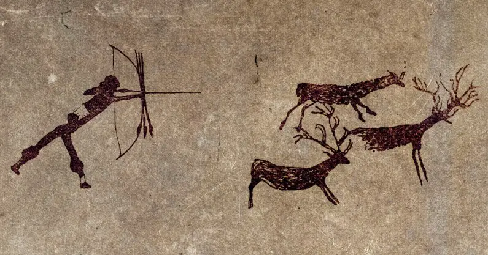
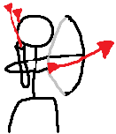

Origin
Archery — the use of a bow to launch arrows — is one of humanity’s oldest technologies, with evidence dating back at least 70,000 years.
Earliest evidence

The oldest known arrow points come from Sibudu Cave in South Africa, dated to about 72,000–60,000 years ago, made from bone and stone. These were likely used for hunting, allowing early humans to strike prey from a safe distance. Other early finds include Levallois points in Uzbekistan (~80,000 years ago) and stone arrowheads in Fa Hien Cave, Sri Lanka (~48,000 years ago) Wikipedia. In Europe, the Holmegaard bow in Denmark (~9,000 BCE) is the oldest known complete bow
Archery History Timeline
Archery’s origins can be traced back to the late Paleolithic period when humans used bows and arrows for hunting. Some of the earliest evidence comes from arrowheads discovered across Europe, Asia, and Africa. Cave drawings in Spain, dating back to around 30,000 BCE, depict archers hunting.
The bow design evolved significantly during this timeframe. The single-curved simple bow became the double-curved recurve bow around 2000 BCE, increasing power and accuracy. This change allowed archers to have greater success in both hunting and warfare.
Archery played a significant role in ancient civilizations like Egypt, China, and Mesopotamia. Egyptians used bows and arrows for hunting and warfare starting around 3,000 BCE. King Tutankhamun’s tomb contained an extensive collection of archery equipment, showcasing its importance to Egyptian culture.
In China, archery developed into an essential aspect of military and philosophical study. Confucius and his disciples wrote extensively about the practice, its ethics, and its role in society. China’s Zhou dynasty even established an archery contest known as sheji, which determined social standing from the outcome.
During the Middle Ages, archery gained prominence in European warfare. England became famous for its longbowmen; their skills were instrumental in battles such as Creçy in 1346 and Agincourt in 1415. The longbow transformed military tactics and enabled the English to achieve notable victories against the French during the Hundred Years’ War.
In contrast, Japan’s archery tradition focused on spirituality and discipline. Known as Kyudo, or “the way of the bow,” it became an essential practice amongst samurai warriors and played a vital role in Japanese culture and Shinto rituals.
With the advent of firearms in the 16th century, archery’s role in warfare diminished significantly. However, it remained a popular pastime for European nobility and recreational enthusiasts. In England, King James I and later Queen Anne encouraged the practice as both a sport and a martial skill.
In 1673, the Royal Company of Archers was founded in Scotland, establishing a formal archery competition with annual gatherings. This marked the transition of archery from military necessity to competitive sport and recreational activity in European society.
The 19th century experienced a resurgence of archery as a sport. The establishment of archery clubs in Europe and the United States, such as the Toxophilite Society in England and the United Bowmen of Philadelphia, contributed to its growing popularity.
Competitive archery grew with the inaugural Grand National Archery Meeting in 1844 in the United Kingdom, where participants competed in various events. By the end of the century, the sport had gained considerable traction, emphasizing both accuracy and marksmanship.
The Olympic Games in Paris in 1900 marked the first time archery made an appearance on the global stage. It was later featured in four other Olympiads; however, inconsistencies in rules and a lack of international standardization led to its exclusion after the 1920 games.
Efforts to standardize the sport culminated in 1931 with the formation of the International Archery Federation (FITA), now known as World Archery. With standardized rules and regulations in place, archery could be reintroduced as an Olympic sport in the coming decades.
Archery made its return to the Olympics in 1972, with new formats and competition styles. Athletes now participate in various categories, including individual, mixed-team, and team events, utilizing recurve bows for Olympic competitions.
Modern technology and advancements in materials have influenced the sport, resulting in more accurate and efficient bows, arrows, and accessories. The development of compound bows in the 1960s revolutionized archery for hunting and competition, though they are not used in the Olympic Games.
Development in the Paleolithic and Neolithic
During the Upper Paleolithic (~30,000 years ago), bows and arrows appeared in Europe and Asia, often made from wood, bone, and flint. By the Neolithic period (10,000–4,500 BCE), bows became more sophisticated, using composite materials such as wood, horn, and sinew, and arrowheads evolved from flint and obsidian to bronze and iron. This improved range, power, and accuracy, making archery vital for both hunting and defense.
Archery in early civilizations
By the Bronze Age (~3300–1200 BCE), archers were integral to armies in Egypt, Mesopotamia, the Indus Valley, and beyond. The Persians perfected mounted archery, while Parthians became famous for shooting while retreating. In China, India, and Japan, archery was both a military skill and a cultural art form, often enshrined in mythology and ritual.
Global spread and decline
Archery developed independently across continents due to its universal utility. It remained important in warfare until the late medieval and early modern periods, when firearms gradually replaced it in most regions. Today, archery persists as a sport, cultural practice, and hunting method.
In summary:
Archery originated in Africa over 70,000 years ago, spread globally through the Paleolithic and Neolithic periods, and evolved from a survival tool into a sophisticated military and cultural technology before being largely supplanted by firearms in warfare, though it remains culturally and recreationally significant.
Uses
hunting, warfare, sport, and ceremonial purposes, and continue to serve as tools for recreation and cultural practices today
Hunting
One of the earliest and most widespread uses of the bow and arrow was hunting animals for food. Indigenous peoples across continents, from North America to South America and Africa, used bows to hunt game efficiently, allowing for survival and sustenance. The design of bows and arrows often varied depending on the type of prey and environment.
Warfare
Historically, they were primary weapons in warfare, used across Europe, Asia, and the Middle East. Armies relied on archers for ranged attacks, and mounted archery was particularly significant on the Eurasian steppes and in Asia. In literature and historical accounts, bows were decisive in battles, such as Odysseus’s use in Homer’s Odyssey and in biblical narratives Encyclopedia Britannica
Sport
In modern times, bows and arrows are primarily used for archery as a sport or recreational activity. Competitive archery includes target shooting, field archery, and bowhunting competitions. Archery requires skill, precision, and practice, and it is recognized as an Olympic sport
Recreation and Cultural Practice
Bows and arrows have held symbolic and spiritual significance in many cultures. In Native American traditions, they were considered embodiments of power and magic, often linked to the spirit world. Certain shrines and sacred sites, such as those in Matobo Hills and Great Zimbabwe, incorporated bows in rituals and ceremonial practices. In Asia, archery was integrated into martial traditions and ceremonial displays, such as Japanese kyudo.
Archery Mini Quiz
Score
Fun Facts and Facts
1. Archery is thousands of years old The bow and arrow has been used for over 10,000 years, mainly for hunting and survival. The oldest known bow is over 10,000 years old
2. Ancient bows have been discovered that date back thousands of years, showing how long humans have used this technology.
3. Archery was once an Olympic sport Archery first appeared in the 1900 Olympic Games. It was later removed and returned permanently to the Olympics in 1972.
4. The English longbow was incredibly powerful Medieval English longbows could be around 1.8–2 metres long and required significant strength and training to use effectively.
5. Some bows are faster than you might expect Modern compound bows can launch arrows at speeds of over 300 feet per second (about 90 metres per second).
6. Archery is more than just strength Good archery requires concentration, balance, coordination, breathing control, and consistency.
7. The word "archery" comes from the Latin word "arcus" The word is related to the Latin term for bow or arch.
8. Archery was important to the Mongol Empire Mongol warriors were famous for using bows while riding horses. Their ability to shoot accurately from horseback was a major military advantage.
9. There are different types of bows Common types include recurve bows, compound bows, and traditional longbows. Each has different designs and characteristics.
Game Instructions
1. Click Start to Start the Game
2. Press or hold W to go upward, S to go downward
3. Click on the Shoot button to shoot
4. You can click on Restart to restart or end to pause the game
Timer:
Score:
